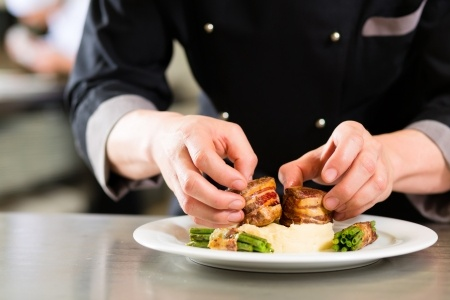
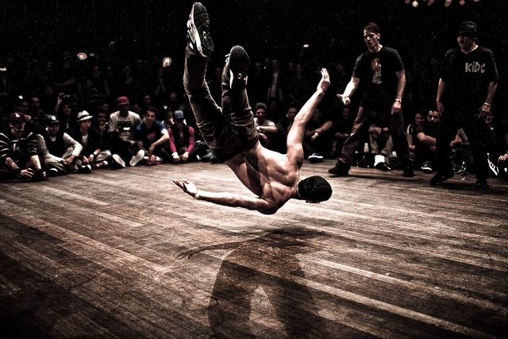
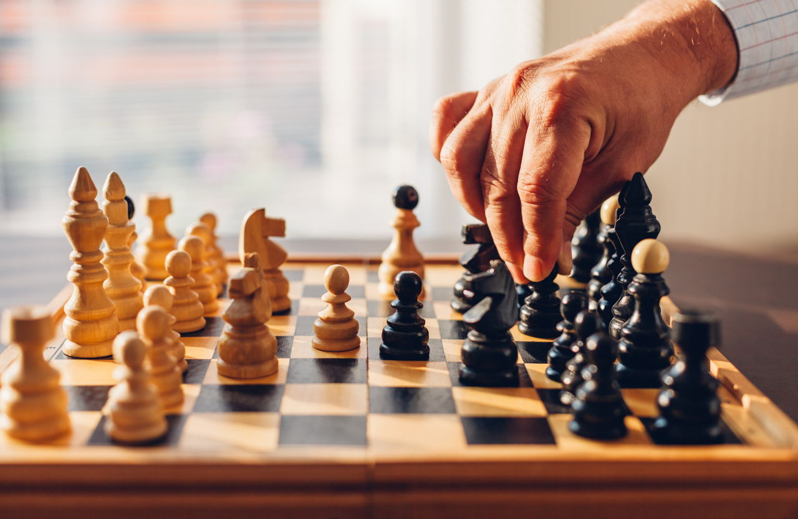
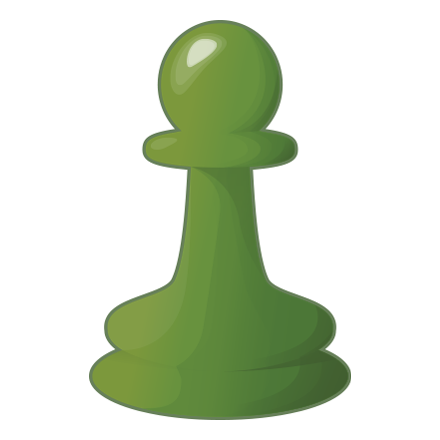

Hobby

I started cooking since I was in middle school when I had to cook a meal for my younger sister. I started with a very simple food such as instant noodle and rice. Then I started to spark off my cooking style when I moved out in my early 20’s for university. Buying fast food was cheap but not particularly healty, and restaurants were just too expensive for students.
So, I started with some basics, but as I learned more about cooking and discovered that I could cook a delicious meal for a fraction of the cost. I started reading and watching tutorials about cooking, and I learned more advanced techniques and found interesting recipes.
I got good at cooking relatively fast because I enjoyed cooking and found that I liked seeing others loving my cooking.

Can you guess my next hobby from the picture? If you haven't guessed it, it's Breakdancing (and sort of working out). I started to dance in high school with my best friends because we thought it was cool and though it would make us unique.
As I danced longer, I saw many other good aspects of it. I was a shy person who couldn't go up to strangers and start a conversation. Through dancing, I was able to overcome the fear. Secondly, it made me into a persistent person. Breakdancing was very challenging
as one goes through many injuries and needs to practice consistently. Unfortunately, people can breakdance until late 30s because body starts to become weaker so you are more prone to injuries. But I think I will try to enjoy dancing as much as I can to make good use of my youth energy because I think I will regret it if I don't try hard now.

Chess is a two-player strategy board game played on a chessboard, a checkered gameboard with 64 squares arranged in an 8×8 grid. The game is played by millions of people worldwide. Chess is believed to be derived from the Indian game chaturanga some time before the 7th century. The pieces assumed their current powers in Spain in the late 15th century; the modern rules were standardized in the 19th century.
Achieved 1vs1 Elo 1400+ (Top 10%) in July 2018

Click to view Chess Profile!
Games! Gaming has been part of my life consistently. I am very competitive when it comes to gaming so I always strived to reach high ranks. These are the recent games I played.
Starcraft is a science fiction real-time strategy video game developed and published by Blizzard Entertainment in July 2010. Most active players recorded was 2 million.
 Click to view Starcraft2 Profile!
Click to view Starcraft2 Profile!
League of Legends is a multiplayer online battle arena video game developed and published by Riot games in October 2009. In September 2016, the company estimated that there are over 100 millon active players each month.
 Click to view League of Legends Profile!
Click to view League of Legends Profile!
Achieved 1vs1 Diamond (Top 18%) and 2vs2 Master (Top 2%) from 2013-2017
Achieved 5vs5 Diamond (Top 2%) in Season8 (Year 2018)

These are some of my favorite shots!
You can find more beautiful pictures on my instagram